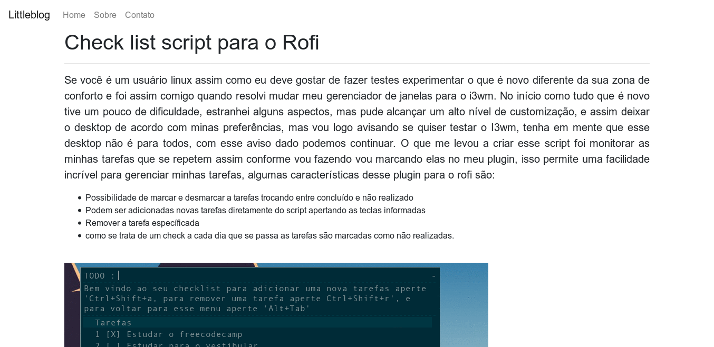
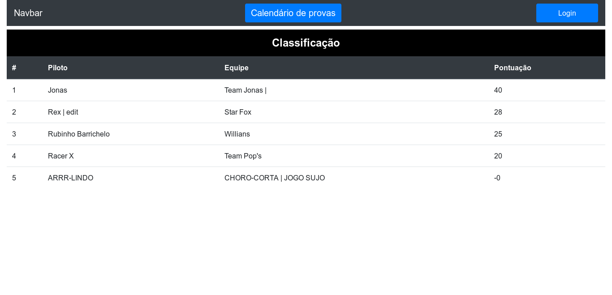

Olá meu nome é Rodrigo Gabriel Clemente de Barros e minha História com tecnologia propriamente dita se inicia desde muito cedo, acredito que quando ganhei meu primeiro computador em torno da 7ª ou 8ª série, após pouco tempo percebi que já sabia muito mais sobre computadores que muitas pessoas que tinham mais tempo de uso do equipamento que eu, mas só fui adquirir um real interesse por programação propriamente dita quando uma dia um amigo meu queria construir um site para exibir estátisticas de um jogo e para isso ele consumia uma api, porém no meio do desenvolvimento ele encontrou dificuldades no desenvolvimento, decidi então ajudá-ló e a partir desse dia começamos a desenvolver nosso site em PHP com MySQL, desde então meu interesse por tecnologia só foi aumentando.
Alguns de meus projetos podem ser vistos nos links a seguir:
Littleblog
Tabela de Classificações
Para mais projetos visite meu perfil no Github.
Bom quanto a minha experiência como já dito antes eu participei da construção de um site que exibia informações sobre um determinado jogo para construir o site foram utilizados alguns recursos tais como:
Também realizei alguns projetos pessoais pessoais tive uma experiência profissional como desenvolvedor em uma agência de websites focada em SEO, lá pude ver como é o mercado de trabalho, o que se exige de um profissional, aprendi muita coisa lá também, após algum tempo de trabalho resolvi aprender um framework (Laravel) que alguns amigos me recomendaram, e vi as facilidades que ele pode proporcionar para o desenvolvedor que é essencial para o mercado atual.